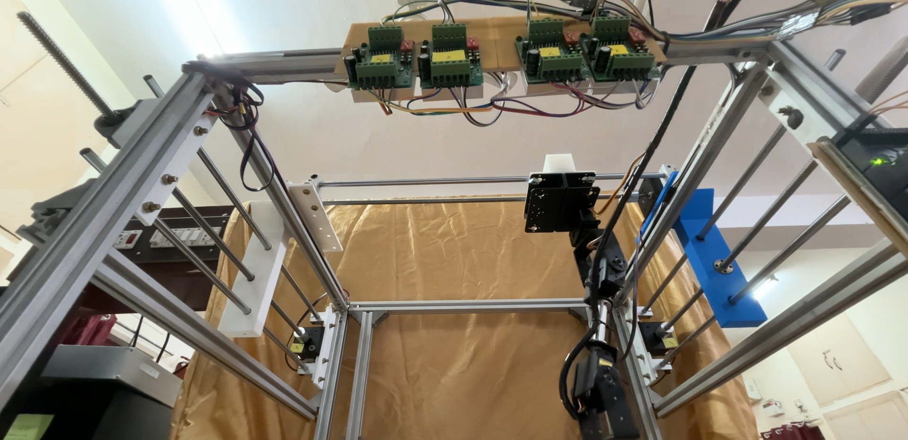

Ongoing Research

Robotic C Scan for multi-DOF scan setup
While working on the [tFUS], I built a standard C-Scan setup for acoustic field characterization. I was curious about how far can i develop this setup and make it more versatile and intelligent.
Click on the Card to know more.

Deep Learning based Acoustic Field Characterization and Simulation
Tried implementing DL algos like CNN and PINNs for certain section in the research of tFUS.
Click on the Card to know more.

Transcranial Focused Ultrasound Stimulation Device
Project Description: Design, Development and Testing of a fully functional Transcranial focused ultrasound stimulation [tFUS] device for cognitive enhancement in military scenarios.
Click on the Card to know more.